Will Serena get accepted into Duel Academy? And what dorm will she choose? Time to see!
Yugioh: The Power of Four
Yusho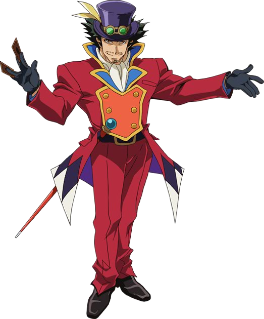 and
Asuka
led their students back to the main Academy building for their qualification exams. They could tell they were excited about being accepted and getting into those new
dorms. The two were also pleased that they started to put aside their misgivings about Obelisk Blue. Well, all but one, as they and
Rei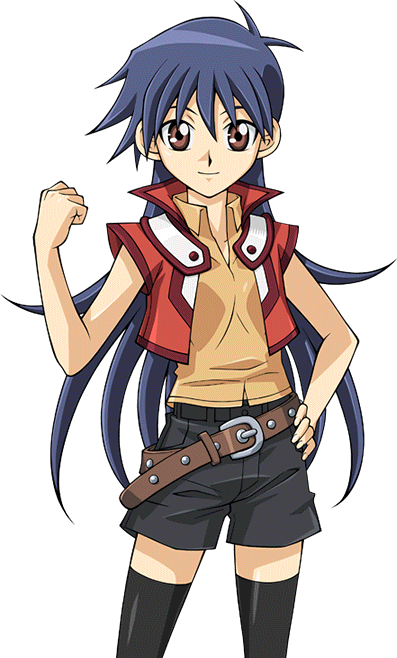 noticed when they glanced
at a certain indigo haired girl trailing in the back.
Serena
was deep in thought, not paying particular attention to where she was going while holding her
bracelet. She really was
looking forward to starting her new life at Duel Academia,
like her fellow students. She had no doubt she would get into the dorm she desired. That was not all on her mind, however. The girl actually had two things troubling her.
First, and foremost, was her negative feelings about the Obelisk Blue dorm. She listened as the boys and girls compared notes on their tours of the separate buildings
that comprised of the highest qualified students in the school. Apparently the girls really liked the girl dorm's overall design, the gourmet dining, and the hot tubs
just on the other side. The boys were just as impressed with the other building.
Serena herself couldn't care less about what Obelisk Blue had to offer. She absolutely refused to have any association with it if she could avoid it.
Serena: I cannot believe what I'm hearing. How could they say how much they liked visiting those damned dorm buildings? Have they forgotten how much grief the
Obelisk Force caused back inAcademia
!? This dorm shares the same name as them!
Serena wanted to yell at them and demand to know why they should be acting they way they were. Instead, she kept silent, keeping her inner most thoughts to herself.
The other thing bothering her was something she never felt before... something she couldn't quite name. Seeing
Judai
starting to spend time with the
Asuka Tenjoin
he personally knew made her feel... unsettled. It wasn't just that, either. She saw how that other girl, Rei, practically threw herself at Judai and seemed like she
wanted time with him too.
Serena: Rei... that other Asuka... why are they so interested in being with Judai? Why is this bothering me for that matter? It shouldn't be making me feel like this!
But it did make her feel that way. The more Serena pictured the other Asuka or Rei hanging out with Judai…the more she felt like beating them to death. She just
couldn't understand why.
Rei: Hey, Serena right? What's up? Pre exam jitters?
Serena's troubling thoughts were interrupted by Rei, one of the very girls she didn't want near Judai. She then tried to act nonchalant.
Serena: No jitters here. I have every intention of acing those tests, no sweat.
Rei smiled at her enthusiasm and determination.
Rei: Good to hear. I didn't have any trouble in my entry exams either.
Serena then remembered something unanswered from earlier.
Serena: You didn't answer Asuka 's question from before. Why do you wear a jacket that doesn't match the dorm you're staying in?
She asked. Rei chuckled.
Rei: Oh, that's just a personal choice. I've known and seen students move to different dorms but still keep the jackets they had before when they got into their
previous dorms. Even though I'm an Obelisk, I still choose to wear the Osiris jacket because I started there. Plus... whenever I put it on, I'm reminded of the times
I spent with Judai-sama when he was a student.
Rei looked up dreamily at the sky when she said that. Good thing too, because at that moment Serena balled her fists and slightly shook them.
Serena: Why do you and Asuka like to be with Judai?
She blurted out before she could stop herself. Rei turned to her in surprise, especially when she heard an angry tone in the younger girl's voice.
Rei: I don't know about Asuka - san
but me? Um, because he's awesome and cute? Plus, I guess I kind of always had a thing for older guys. Why do you ask? And why do you sound like you hate us?
Rei asked, now concerned about Serena's attitude toward her. Serena stopped walking and faced the older girl.
Look Rei, I don't hate you or this world's Asuka. I just...
She hesitated for a moment.
Serena: I just don't think either of you should spend time with him, that's all.
She said, now looking a little red. Rei was stunned at first. A minute later, she started to giggle.
Serena: What's so funny? She demanded.
Rei: You're jealous, aren't you? Rei guessed.
Serena: Jealous? What do you mean? Serena asked, clearly not understanding Rei's statement.
Rei: Tell me Serena... Is Judai-sama your first crush? She teased.
Serena: Crush? I haven't crushed anything on Judai. I haven't crushed him in a Duel yet if that's what you're asking.
Serena answered. Rei looked at her like she never saw anything like her.
Rei: Wow... you really have no idea what I'm talking about, do you?
Rei asked incredulously.
Serena: Clearly not! What in the world are you getting at?!
Serena asked angrily. Rei thought it over for a moment before asking a simple question.
Serena: Serena... Have you ever wanted to be with a boy because you feel differently about him than any other?
Serena's answer surprised her.
Serena: No. Besides, I need to focus on those exams. I can't waste anymore time on things like this.
Serena said before finally walking again, having heard enough. Rei held her forehead while sighing.
Rei: Man, that girl has got a lot to learn when it comes to boys.
She said to herself before trailing after her.
Serena was once again in deep thought as she made it to the main entrance to the Academy. None of the things Rei told her made any sense.
Serena: Jealous? Crush? What was Rei trying to say with those words?
Serena thought this while unconsciously touching the ribbon tied to her hair. She was trying to get her head cleared up when she accidentally bumped into someone who
just came out from the main entrance. Both Serena and the other person fell to the ground.
???: Oh, uh sorry miss! Are you okay? Asked the stranger, sounding polite and concerned.
Serena: Yeah, I'm fine. But I'm the one that's sorry. I wasn't watching where I was going.
Serena said without looking up, feeling slightly embarrassed. She then saw a hand reaching out to her.
???: Here, let me help you up.
Serena looked at the hand and then up at it's owner. It was a boy about her height with grey eyes, short light blue hair and wore a white jacket with blue trimmings.
He gave a friendly smile while offering his hand to help her up. Serena felt something of a "jolt" while locking eyes with the boy. This nearly took her breath away.
Normally, Serena wouldn't accept help so lightly. She could easily pick herself back up. This time though, without understanding why, she took the boy's hand and
allowed the stranger to help her onto her feet.
Serena: Thanks. You're not... mad or anything, are you?
She asked, still looking the boy in the eye, not realizing she started to blush. The stranger gave a light laugh.
???: No, not at all. My name is Sho Marufuji. What's yours?
He asked. Serena found herself smiling back.
Serena: S-Serena.
She said, not believing she had trouble saying her own name. That has never happened to her before.
Sho: Serena... that's a pretty name. Are you new here?
Sho asked, sounding sincere. Serena's smile widened.
Serena: Thanks... I guess. And yeah, I'm trying to qualify to get into Duel Academy.
She replied shyly, which didn't really sound like her either.
Serena: What the hell was wrong with me?!
Sho: I hope you get in. It really is a great school.
Serena: So do I.
Serena replied softly. They just stared at one another, not saying another word until they heard someone clearing their throat. They both looked to see Rei smirking at them.
Serena: Hey Sho-kun. Welcome back. And... I see you're getting to know someone here.
She said slyly while pointing at them. It was at that moment Serena noticed Sho was still holding her hand.
Serena: Uh, Sho... could you please let go of my hand now?
She asked, trying not to sound rude. Sho gasped as he also saw this and immediately released the girl's hand.
Sho: Ah, sorry Serena! I um... didn't know I was...
Sho apologized while trying to explain himself as he looked away, now looking embarrassed himself.
Serena: Don't be. I, uh, didn't notice either. Anyway, Rei... you and Sho know each other?
Serena questioned while looking even redder, trying to quickly get that awkward moment out of her mind.
Rei: Yeah, we went to school together too. He graduated at the end of last year. One of the best in his class I should say.
Rei said. Sho smiled awkwardly.
Sho: I guess I... did fine.
He said shyly. Rei enjoyed watching the two like this. Too bad it didn't last for long.
Alex: Serena, come on! The written exams are about to start!
Alex called from inside. Serena gasped as she remembered.
Serena: Oh yeah! Thanks, I'll be right there!
The girl then turned to Rei.
Serena: I have to go now! See you later Rei! And Sho...
Serena said as looked him in the eye once more.
Serena: Nice to meet you.
She quickly said before running inside to meet up with the other students and take the exams.
After watching Serena run inside, Sho found Rei snickering at him.
Sho: What? Why're you laughing?
Rei: Sorry, I couldn't help it. It's not every day I get to see two new lovebirds and have some fun in the process.
Rei said. Sho gasped while shaking his head and waving his hands rapidly.
Sho: What?! Lovebirds?! No, no no no! You got it all wrong! I was just being nice to her, that's all!
Sho yelled, now tomato red. The truth was, though he didn't want to admit it, he actually felt something when he took hold of Serena's hand. He was usually hopeless
when it came to girls. But somehow, he didn't have any trouble talking to her. Rei laughed at his pathetic attempts to deny it.
Rei: But seriously, I like your new look. Ditching those glasses and getting a hair cut makes you look less like a dork and more... mature.
Sho a gloussa.
Sho: Yeah, I'm wearing contacts now and did get a trim. Nii-san suggested I should try changing my appearance so that people would take me more seriously. To tell
the truth... I actually like it.
Sho admitted.
Rei: Good to hear that. How is your brother, by the way?
Rei asked. He was about to answer when...
???: Hey! Marufuji-senpai! What's an old dinosaur like you doing back at school-don?
Both Sho turned to see a tall, muscular young man with dark skin and dreadlocks running up to him.
Kenzan: Thanks pal! So anyways...
Kenzan then acted a little more seriously.
Kenzan: Why are you back-don? He asked again.
Sho: Nii-san sent me here to scout out new potentials for our Dueling League. I expect there to be at least one or two hopefuls.
Sho said, sounding more confident than Kenzen remembered. This seem to get him excited.
Kenzan: That sounds awesome-saurus!
Rei: Same here. So, about Ryo-sama. How is he?
Rei started to ask again. To her and Kenzan's surprise, Sho lost his smile and looked away.
Kenzan: What's up? Is your brother okay-saurus?
Kenzan asked, now sounding concerned.
Sho: Sorry guys, but I can't chat. Samejima - Kosho (trad: Samejima-Kôshô = Principle Samejima) asked me to go find Judai and make sure he doesn't miss the qualification exams for some new students.
Sho said, changing the subject.
Kenzan: What?! Judai-aniki's back too?! Kenzan yelled in surprise.
Rei: Yeah, he is! I saw him just recently! Rei answered.
???: Did you now?
Demanded a new voice.
The trio turned to see another old face just now entering the building. A young man with wild black hair in dark clothes beneath a black jacket strutted towards the
trio.
???: So where is he? Where's my old rival hiding?
Sho: Manjoume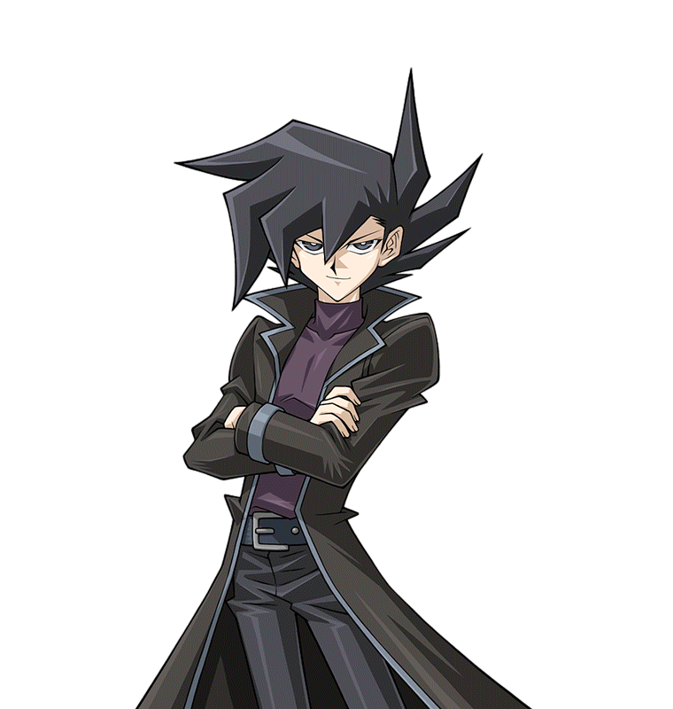 - kun ! You're back here too?
Sho said, surprised that Judai's friend and rival from school also showed up. Manjome snorted while smirking.
Manjoume: Well of course! Congrats on your new appearance, by the way. I personally think it suits you more than the nerdy look you used to have. More importantly,
if you must know, I was chosen to check out all the new freshmen Duel Academy is getting this year! You know, be a role model to motivate them to follow in my
footsteps!
Sho, Kenzan, and Rei sweated dropped. They doubted any of the new students would want to be the kind of person he was.
Sho: S-Sure, whatever you say.
Sho said while smiling, trying to sound sincere.
Sho: And speaking of Judai, I was actually on my way out to find him. We don't want him to miss the qualification Duels.
Manjoume: Well good. When you find Judai, tell him Manjome Thunder has returned and wants a rematch! Sho winced.
Sho: I'll... be sure to tell him. Sho replied nervously before running outside. Manjome snickered.
Manjoume: I cannot wait to beat him this time. He said, looking forward to that rematch.
Kenzan: Yeah, like all the other times you got your ass whopped by aniki-saurus. Kenzan said with a laugh.
Manjoume: Watch your mouth, Dino Breath! Manjome angrily shot back. Rei laughed as well. She missed her old friends bickering like this.
Rei: Come on guys. The qualification Duels will start soon. Let's go find some seats.
Rei said, leading the two boys to the main dueling arena. Manjome huffed as he and Kenzen moved, though the former did congratulate the latter for getting into the
dorm he himself was in.
Rei: Say Manjome, have you heard anything about Sho's brother? He didn't say anything when I asked him.
Rei asked.
She hoped he would know, now being part of the Pro Dueling League. Manjome raised an eyebrow.
Manjoume: Ryo Marufuji
? The former Kaiser? Last I heard, he and his brother were starting up a Cyber-Style Pro Dueling League. But recently he dropped off the grid. There's been no
news about him for months.
This made Rei and Kenzan really worried for their friend and his brother.
Along the way, the two guys met another familiar face. As she was coming out of the ladies room,
Asuka
spotted Rei with two older guys. She assumed they were friends of hers.
Asuka (Arc-V): Hey Rei! You heading to the arena for the matches? She asked.
Before the younger girl could reply, Manjome shoved Rei aside and bowed before Asuka in a very formal fashion.
Manjoume: Tenjoin-kun! my love! It makes my heart soar to see you again! I take it this means you got the teacher position you wanted here?
Manjome asked, smiling confidently while taking her hand.
Asuka, on the other hand, was completely stunned. All the young woman did was blink in confusion and started to sweat.
Asuka (Arc-V): What!? Uhh... What the?
Asuka had absolutely no idea who this guy was or what he was talking about. He, however, seemed to know her quite well. Or rather, the other her.
Asuka (Arc-V): Oh no. He thinks I'm this world's Asuka ! And what's worse, he seems to be in love her... or rather, me! How do I get out of this?!
She at first thought about telling him the truth, but without Judai and the other Asuka around, that seemed impossible. She also doubted Rei, the only person present
who knew, could do any better. The older girl also didn't want to cause a major misunderstanding. What should she do?
Thankfully, Rei saw the pleading look in Asuka's eyes and acted quickly.
Rei: Manjome, would you knock it off? We have to get to the arena or we'll be late.
he said, slapping the guy's hand away (which annoyed him) and led Asuka away.
Kenzan: You okay, Asuka-senpai? It ain't like you to be speechless like that-saurus. Kenzan asked as he caught up.
Asuka (Arc-V): I-I'm fine. I was just caught off guard, that's all. Asuka said with a laugh.
Rei: Yeah Kenzan, it happens to everyone. Rei added.
Kenzan shrugged, seeming to accept the answer. The girls' relief was short lived, however, as Manjome instantly reappeared and wrapped his arm around Asuka's.
Manjoume: When we get to the arena, you can sit right next to me!
He said like it was the greatest honor in the world. Both girls sighed, exasperated.
Chapter 13: Reluctance against the "Obelisk". A meeting that can change everything.
Meanwhile, the Asuka
that Manjome and Kenzan did know was standing next to Judai, overlooking the sea. They were both leaning on a rail behind the Osiris Red dorm. Upon reaching it after
leaving Yusho and Serena, Asuka changed out of her business clothes. She now wore a school uniform much like the one
Emi Ayukawa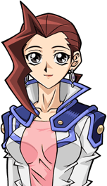,
wore... only a bit less revealing. Her jacket was sleeveless and had a light blue shirt underneath and a blue skirt.
As they gazed, Judai brought her up to speed on his recent mission. Like Samejima, every fact floored her... including the fact that another her from the Fusion
Dimension escaped here. And that the girl she talked to, Serena, was at the very center of everything.
Asuka (GX): That all sounds incredible, Judai. We've been through some crazy stuff when we were both still in school. But I swear... you have the craziest
adventures when you're alone.
Asuka said, making Judai laugh.
Judai: My life has always been crazy, Asuka. It just got a whole lot crazier lately.
He and Asuka both laughed together. The girl felt happier being with Judai again. She hadn't seen or heard from him since their graduation. It seemed like a lifetime
ago. She had really missed his goofiness, his carefree attitude, his warm smile... all the things she loved about him. If only she had the guts to tell him that night...
Asuka (GX): So... this other me from that far off world... What's she like?
Asuka asked after a minute, sounding slightly nervous. She began to worry if her alternate self had developed feelings for Judai too. He smirked.
Judai: Actually, she's not that different from you.
He said, making her feel more uncomfortable, until...
Judai: There's one big difference between the two of you, though.
Asuka (GX): What's that? Asuka asked. Judai continued to smile at her.
Juadi: She didn't go to school with me. Asuka smiled back, and her heart beat a little faster.
Asuka (GX): That's good to know.
She said. The young woman had started to think how she could express her feelings to him. She didn't want to screw it up.
Judai: So, what's new with you? Yusho tells me you're working here now?
Judai asked after a minute, pulling Asuka back into reality. She quickly nodded.
Asuka (GX): That's right. I'm now working alongside Emi-sensei to watch over the girls in Obelisk Blue and her classes. I know it's a lot of work, but I'm positive I can do it.
She said determinedly. Judai nodded.
Judai: Awesome. I know you'll do great. I, for one, definitely believe in you. You're one of the strongest girls I know... naw, scratch that... make that "the"
strongest girl I know.
He said. Asuka then looked away at the ocean, starting to blush.
Asuka (GX): Thanks Judai. That means everything... especially coming from you.
She said softly.
The girl closed her eyes and smiled as she felt the ocean breeze hit her face and blew through her long hair. It felt really good. What made it even better was that
Judai was there to enjoy it with her.
Judai: Sure, anytime.
Said the former Osiris Red student as he also enjoyed the view. Asuka then took a sideways glance at Judai.
She then thought back to their first Duel in their freshman year. She had barely known him at the time, but she was already fascinated with his dueling skills. She was
amazed that he took her down without much trouble, even though she was a top student. Over the years, her admiration and overall feelings for Judai grew. And now,
here they were, together again at the school where their friendship began.
Asuka (GX): Maybe it's time for something else to begin here...
She thought.
After another moment, Judai began to walk away.
Judai: Well, I think we should head on to the main Academy building. Serena and the others will be dueling to get into the school soon. I really can't wait for you
to see her in action, Asuka! She's tough and...
Judai stopped when he realized Asuka wasn't walking with him. He looked back to see her still standing at the spot he left her.
Judai: Asuka? You coming?
Asuka turned to face Judai, who noticed she now looked really serious.
Asuka (GX): Judai, I need to say something before we go. Something... I should've said a long time ago.
Judai: Like what? Judai asked, not knowing what he was about to hear. Asuka took a second before she spoke again.
Asuka (GX): Do you remember the two of us talking the night after we won that tag team tournament? She questioned.
Judai nodded. He remembered everything about that.
Judai: Yeah, you told me you had all your doubts cleared up and that you were glad to have met me.
He didn't see what that had to do with anything. Asuka then went on, knowing what she was about to risk.
Asuka (GX): I did say all that. The thing is... I wanted to tell you something else that night. Only, I couldn't bring myself to say it then. I was just too scared.
She hesitated, looking nervous for a moment. After regaining her courage, she pressed on.
Asuka (GX): But the moment I saw you again today since graduating... I realized just how important you are to me. I can't pass up another opportunity to tell you.
She said firmly.
Judai: Tell me what, Asuka?
Judai asked, sounding really confused.
Asuka then walked up to him, not looking away. When she was right in front of him, she took his hands and held them in hers. Judai was surprised by this. But what he
heard next really caught him off guard.
Asuka (GX): I love you, Yuki Judai.
The young man, who faced many dangerous enemies and saved the whole world from disaster more than once, stood petrified. Judai stared at Asuka with disbelieving eyes,
his jaw dropped. He didn't know what to say to that; the guy was truly without words. Asuka waited for him to respond to her confession, not wanting to rush him. Judai
finally got his voice back after a long silence.
Judai: You... love me? Really? He asked softly.
Asuka (GX): Really. Asuka answered just as softly, smiling. Judai allowed what he had heard to sink in.
Judai: I cannot believe it. Asuka... loves me. She's in love... with me! Of all the things I expected her to say, that was definitely at the bottom of the list!
He then thought about all the times he spent with her. The times he enjoyed being with her... aside from all the bad times like how she was mind controlled and had been
angry at him. He had always seen her as a really good friend in the past. Now though, knowing how she truly felt about him...
Judai: She must be risking everything to tell me that. How the heck can I do anything now except...
He then held Asuka's hands more firmly.
Judai: I love you too, Asuka Tenjoin.
Judai said at last, giving his warmest smile ever. Asuka smiled even more as she started to tear up. She had hoped to hear him say that, and when he did, she felt the
happiest she had ever been. Then, Judai and Asuka both leaned in, closed their eyes, and shared their first kiss. As they kissed, Asuka's tears ran down her cheeks.
The two wrapped their arms around each other and pulled themselves closer together, enjoying the contact. The world seemed to have stopped around them, for nothing
mattered except how much this had been worth the wait. Both Judai and Asuka felt each other's love through their kiss, and they never wanted it to end.
Eventually, they did end it to get some air. The two breathed heavily after their intense, passionate lip lock. They gazed into each other's eyes, seeing themselves
no longer just friends... but something more.
Judai and Asuka: Wow. They said at the same time.
Sho: I'll say.
Judai and Asuka turned quickly to see Sho, staring thunderstruck at the new couple. They both turned furiously red.
Judai: S-Sho?! Is that really you?! Judai yelled loudly, both from embarrassment at being caught and surprise to see his best friend looking so different.
Sho: Yeah Aniki, of course it's me! I was going to ask if things had changed for you too, but I guess I don't need to now.
Sho said with a slight snicker. Judai didn't reply, though he wouldn't quite meet his best friend's eye.
Asuka (GX): Sho, how long were you watching us?! Asuka demanded, feeling slightly angry as well as embarrassed.
Sho: I came here just when you two said the "L" word and started making out. Sho answered.
Judai and Asuka grimaced that they had been witnessed during their most private moment.
Sho: Honestly, I was wondering if you two would ever get together. Sho added.
Judai: Sho, could you keep this private for now please? Judai asked frantically.
Asuka (GX): We would prefer to tell everyone else ourselves. Asuka said. Sho instantly agreed.
Sho: Sure, absolutely.
Judai: By the way, not that I'm not happy to see you again buddy, but why are you back here? Judai asked, finally calming down. Sho then remembered.
Sho: Oh yeah! The qualification Duels are about to begin and I've been asked to make sure you get to them on time! I figured I'd find you here... though I didn't
expect Asuka to be here too.
Judai: The Duels! We gotta go now! Judai said as he too remembered. Asuka also understood.
Asuka (GX): I hope we won't be late!
She said as the trio then ran towards the main building where the dueling arena was. Judai took Asuka's hand and held it along the way.
Judai: Anything else I should know? Judai asked while running. Sho chuckled nervously.
Sho: Actually, Manjome-kun is here as well and wants a rematch with you! Judai actually laughed that time.
Judai: Yep, that sounds like him alright! Judai said to Asuka, who smiled back.
She imagined how Manjome would react when he found out that she was now Judai's girlfriend… and also felt like laughing.
Serena stood leaning against the wall in a small room, waiting for her turn. Alex and the remaining students stood or sat nearby, looking nervous. The written exams
took about an hour, and now they waited for their qualification Duels. These upcoming matches would decide what dorms they will stay in for the near future.
They all had no problems with the written exams. Serena felt particularly smug, knowing she had gotten the right answers to all the questions. She had no doubt she
would tear apart whoever would test her.
Serena: They have no idea who they are dealing with. The girl thought while smiling.
From where they waited, a huge dueling arena could be seen.
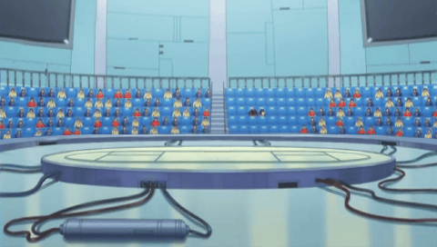
It was surrounded by several rows of seats for the spectators coming to watch. She watched as the seats were slowly being filled. First she saw Principle Samejima,
a plump older woman
sitting on his right, and Yusho Sakaki on his left.
She also saw an odd looking man (she assumed it was a man) sitting on Yusho's right. He wore a dark blue formal uniform and had blonde hair that was short in the front
but with a long ponytail in the back. The thing that made Serena question his gender was that the guy was wearing lipstick. Serena wondered if this was the man Judai
told her about, the person in charge of the Obelisk Blue boy's dorm,
Cronos de Medici.
Next to him on the other side was a woman in dark red hair and red lipstick. That had to be
Emi Ayukawa,
the one overseeing the girl's dorm. She wore a blue and white jacket with a pink undershirt and earrings.
Next, Serena saw Rei and Asuka
taking seats near the front. She knew it was the Asuka she befriended because she knew the "other one" was with Judai, who wasn't among the group. There was also a guy
dressed in black sitting next to Asuka, though she looked very uncomfortable for some reason. A dark skinned boy with dreadlocks sat next to Rei. Serena assumed the
two guys were school friends of the younger girl.
She tried to see if that guy, Sho, was also among the growing audience. However, she couldn't see him anywhere. This disappointed her somehow. She figured he must be
running late and will hopefully arrive in time for her match. She still couldn't understand why she behaved so foolishly in front of him. That never happened with any
boy she met in the past, including Judai. Now, whenever she thought about Sho Marufuji, she could feel herself becoming warmer than normal and felt her heart race. She
shook her head, trying to clear her head for her Duel. She couldn't afford to be distracted.
Then, to her delight, Serena saw Judai running in and taking a seat a few rows above where Rei and the others sat. Unfortunately, she also noticed he didn't come alone.
To her great annoyance, the Asuka of this world
arrived with Judai and sat next to him. Serena did not fail to notice her change in clothes, giving her a look similar to Emi. Seeing her still with him made her blood
boil.
Serena: Are you kidding me? Why is that Asuka still clinging on to him?! Why can't she just leave him alone?!
Serena still had no idea why seeing Judai with the other Asuka was pissing her off so much. She felt the same way when Rei came to see him.
Serena: What was it about those two? What did they have in common that made the guy spend time with them?
As she pondered this, she started fiddling with her hair ribbon. Then an answer came to her.
Serena: Could that be why... ? She asked herself.
After about 10 more minutes, Principal Samejima stood up and got everyone's attention.
Samejima: Ladies and Gentlemen! Staff and Students! Welcome back to Duel Academy! This year promises to have quite a few talented Duelists entering this year and I
hope to see them grow in their 3 years of education! Without further ado, let us begin the qualification Duels! First up, participant number 001! Step into the arena
at this time!
Serena smirked. That was her number, meaning her match would be first.
Alex: Good luck Serena!
Alex called out. The other students also gave her their hope that she'd do well. The girl nodded before she stepped out in the open, putting on her Duel Disk on the
way. It would also be the time to try her tactic to get Judai to pay attention to her more than those other girls...
At the same time, Rei and Asuka were really pleased to see who came out first.
Rei: Look! Serena's up first! Rei said with excitement.
Asuka (Arc-V): This should be good. Asuka said, eagerly looking forward to how Serena would do in her match.
Kenzan: You two know that girl-saurus? Kenzan asked. Both girls nodded.
Asuka (Arc-V): We've met her just recently, Kenzan. She's a good kid with quite a bit of talent.
Asuka said, seeing Serena's skills before against Yusho.
Manjoume: If you value her that much, I have no doubt I will too. Manjome said, not noticing Asuka's look of discomfort from sitting with him.
A few rows above them, Judai and his world's Asuka smiled.
Judai: Sweet! Serena's dueling first! You are going to love this! He told his new girlfriend very enthusiastically.
Asuka (GX): I can't wait to see what she can do. Asuka said.
She then looked around, but didn't see their friend.
Asuka (GX): Where is Sho? Shouldn't he be here watching with us? Judai shrugged.
Judai: He said he had something to do before coming to the matches. I hope he doesn't miss Serena's Duel, though.
Judai said, not wanting his best friend to pass this up. Just then, he saw Serena do something that surprised him.
As she stepped onto the dueling arena, Serena pulled off her ribbon and allowed her hair to freely fall just behind her shoulders.
She then moved a hand through it in a very noticeable fashion. The girl smiled confidently when she stopped at her end and waited for her opponent to appear, arms crossed.
Judai: Why did Serena let her hair down like that?
Judai asked, not understanding. This wasn't something she usually did right before a Duel. Asuka was also confused. She didn't get it either.
Down in the arena, Serena felt sure Judai saw her new look. She let her hair out because she saw a commonality between Rei and the other Asuka: They both had long
hair, with nothing to tie them up like a ribbon or hair pins.
Serena: Maybe now he will pay more attention to me as I duel. Whoever my opponent is... I'll drive them into the ground!
She thought while waiting. She didn't have to wait long, for she could see someone coming out from the other side of the arena.
When the opposing Duelist was fully revealed, Serena (along with most of the audience) gasped in shock. The Duelist who came out to test Serena... was the boy she bumped
into earlier. It was Sho Marufuji.
Sho: Yeah, looks like it. Samejima-kosho told me to duel the first of the qualifiers... but he didn't say it would be you.
He said. Serena could see he was being honest and truly didn't expect this.
She wasn't the only one who was surprised. Judai, his Asuka, and everyone else had the very same reaction.
Judai: What the? Serena is dueling Sho?! No way! Judai exclaimed.
Asuka (GX): I can't believe it either! Sho said nothing about this! Asuka said disbelievingly.
Kenzan: Marufuji-senpai dueling the new girl? That's a shocker-saurus! Kenzan said, stunned.
Manjoume: I'm starting to feel sorry for the kid now. Manjome added.
Asuka (Arc-V): I'm sure she'll do fine. She can win. The Asuka sitting with her replied.
Asuka (Arc-V): Hm? Uh...What's wrong? She asked, seeing the dumbstruck expressions of the two guys.
Kenzan: Have you forgotten how evolved of an dinosaur Marufuji-senpai is-don? Kenzan asked.
Manjoume: Come on, of all the times you've seen the guy duel? Plus, he's the Kaiser's younger brother. How can you think that little girl has a chance at beating him?
Manjome questioned, making Asuka sweat nervously and stutter.
Asuka (Arc-V): Oh, I ah... watched Serena duel not long ago and, um... saw how strong she was! That's why I'm sure Sho-kun would have a hard time handling her!
She said quickly, though she knew nothing of this "Kaiser" person or this brother that was about to face Serena. At least, she knew nothing about the Kaiser of "this"
world. Manjome continued to stare at her, but not because he was still infatuated with her.
Manjoume: What's up with you Tenjoin-kun? You're not sounding like yourself.
He said. Asuka looked away from the look he gave her, her teeth showing.
Kenzan: I agree. Something's different about you-don.
Kenzan said, also sounding suspicious. Rei was about to come to Asuka's defense again when...
Manjoume: Wait... I know why you're acting this way. Manjome said suddenly. Asuka and Rei started to panic.
Rei and Asuka (Arc-V): Y-You do?! They both said at the same time.
Manjome nodded, now looking confident he had the answer.
Kenzan: You sure-don? Kenzan asked.
Manjoume: It's so obvious. He paused before he gave his assumption, looking Asuka in the eye.
Manjoume: Meeting me again so long after graduating made you see just how sexy of a man I have become. Your feelings for me finally started to blossom... and you
don't know how express it. That's why you aren't thinking straight or acting like your old self.
Rei and Kenzan groaned, but Asuka stared at Manjome with eyes wide as saucers.
Asuka (Arc-V): Boy, this guy is just full of himself. I feel sorry for the Asuka he knows.
In response, Asuka gave a nervous laugh.
Asuka (Arc-V): L-Let's just watch the Duel, shall we? She said.
Manjome smiled as he looked back down the arena, thinking he nailed Asuka's behavior issue.
Within the arena, Serena now felt conflicted. She wanted to flatten whoever it was that would test her to prove her strength, but seeing that it was Sho, the guy who
made her feel quite unlike her usual self… was somehow making her hesitate to go through with it. She also wanted to show Judai that she was more worthy of his
attention than those other girls. Impress Judai, or go easy on Sho? What should she do?
Sho was also having similar thoughts. The moment he saw that Serena would be the first to try to qualify, he almost felt like not going out there. He didn't want to
make her look bad in front of everyone. He really did like her. However, Principal Samejima told him to test the first new student by showing his full skills as a
Duelist. Sho agreed, and now he must do it.
Sho: Serena, I know you must be nervous, but don't be! I want you to give it your best! So don't hold back!
Sho encouraged her while activating his Duel Disk. His words snapped Serena out of her uncertainty and regained her fighting spirit.
Serena: You want my best? You shall have it, Sho Marufuji!
She replied loudly, her Duel Disk activating too. Right now, at that moment, all she wanted was to show her strength to everyone present. Now was her time, and proved
she had what it took to get into Duel Academy.
In her hand, Serena saw a way to not only take down Sho's Fusion Monster, but also win on her first turn. That would be sure to impress both Judai and Sho.
Serena: I also play the spell card
“Yugo ”
to Fuse
“Moonlight Blue Cat ”
and
“Moonlight Crimson Fox ”
in my hand! The cat prowling in the azure darkness! The red fox illuminated by moonlight! Swarm in a vortex of the moon's gravity and revive with a new power!
Yūgō Shōkan! Come forth, beautiful beast that dances in the moonlight!
“Moonlight Cat Dancer ”
!
Serena's Ace Monster now appeared, ready to slash it's enemy.
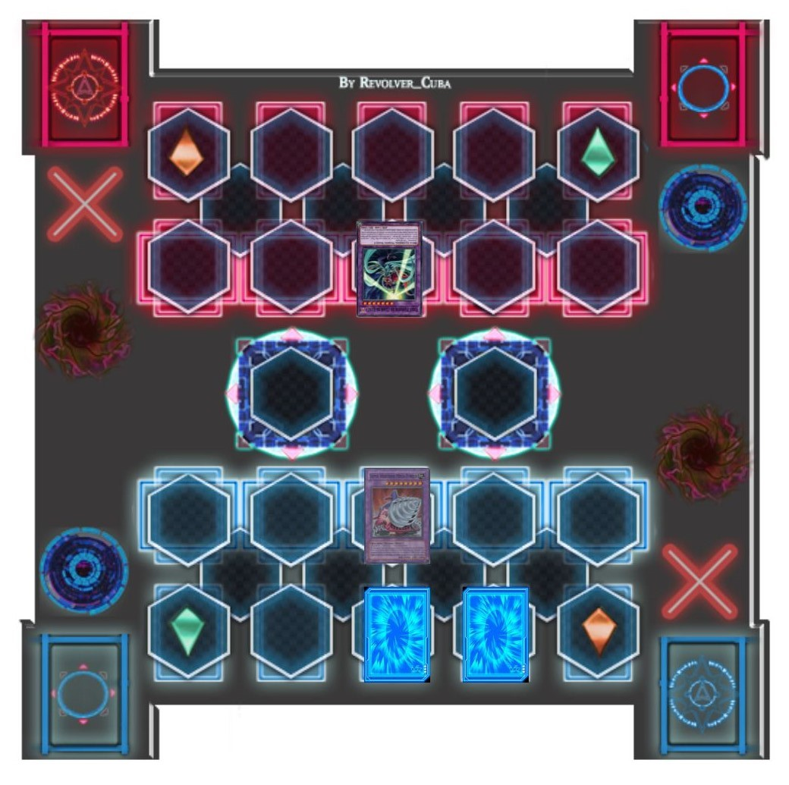
Asuka (GX): She's got good taste in Monsters.
The Asuka sitting next to Judai said, who nodded in agreement.
Sho: I like your Monster, but 2400 Attack Points aren't enough to take down my
“Jumbo Drill ”
. Sho said, but Serena smirked.
Serena: Actually, my Monster has all the power she needs.
She stated, confusing her opponent.
Sho: What did she mean by that? Does her Fusion Monster have an Effect to make it stronger?
Sho wondered. He couldn't have been more wrong.
Serena: I activate
“Moonlight Crimson Fox ”
's Monster Effect!When it is sent to the Graveyard by a card effect, I can choose a Monster on your Field and reduce it's Attack Points to 0 until the End Phase! Your
“Jumbo Drill ”
can't stand up to my Monster now!
Serena proudly declared.
Sho: What?!
Sho shouted in surprise as his Monster became powerless.
(Super Vehicroid Jumbo Drill: 3000 ATK -> 0 ATK)
Kenzan: Uh-oh, the new girl pulled a fast one down there-saurus.
Manjoume: Sure looks like it. But Sho isn't the type of Duelist to lose to a rookie.
He was right, because Sho was prepared for something like this.
Serena: Are you ready to lose? Next I will...
Serena started, but didn't get to finish.
Sho: Your attack won't work! Trap card open,
“Shinnyu Kinshi! No Entry!! ”
! This switches all your Attack Mode Monsters to Defense Mode! Not only that, but you also have to discard one card in your hand!
Sho said, revealing his Trap.
Serena grunted as her Ace was now in Defense Mode. She was about to Summon another Monster so that she could use
“Cat Dancer ”,
's Effect, but Sho squashed that plan. However, she was not too upset about discarding a card. For the card she chose gave her another chance at victory...
Serena: Good move, but you actually gave me a helping hand in defeating you.
She said, smiling again.
Sho: How? Sho asked, curious.
Everyone else was also questioning themselves of what the new girl meant.
Rei: This should be interesting.
Asuka (Arc-V): Oh, it will be. The Asuka next to her said without a doubt.
Serena: The card you made me discard was
“Moonlight Yellow Marten ”
. And at this moment,
“Moonlight Yellow Marten ”
's effect activate!Since it was sent to the Graveyard by a card effect, I can take a "Moonlight" Magic or Trap card from my Deck and add it to my hand! I choose this card:
“Moonlight Fusion ”
!
She said, revealing a new Magic card in her hand.
Serena: And without further ado, I activate the card I've just taken, the spell card
“Moonlight Fusion ”
! This let's me Fusion Summon a "Moonlight" Fusion Monster using Monsters on my Field or in my hand! However, it has another benefit... which you also provided me.
Serena said.
Sho: Pro... Provided you with what? Sho asked, now starting to feel a tiny bit nervous.
Serena: Since you have a Monster Special Summoned from the Extra Deck on your Field, I can also choose a "Moonlight" Monster from my Deck or Extra Deck as Fusion
Material! I Fuse the
“Moonlight Cat Dancer ”
on my Field with the
“Moonlight Black Sheep ”
in my Deck for a Fusion Summon! The beast lurking in jet-black darkness! The beautiful wild beast dancing under the moonlight! Swarm in the vortex of the moon's
gravity and revive with a new power! Yūgō Shōkan! Come forth! Elegant beast dancing on the moonlit wilderness!
“Moonlight Panther Dancer ”
!
Serena's new Fusion Monster looked like a dark skinned woman wearing long ribbons and golden rings on each of it's wrists.
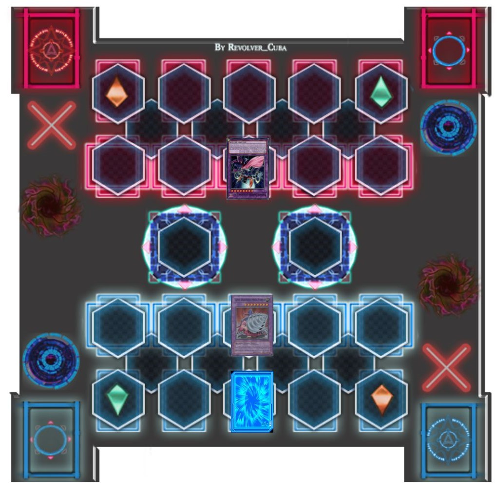
Judai: Now that's what I call a come back!
Judai exclaimed.
Asuka (GX): Definitely! Said his Asuka, sounding impressed.
Manjoume: Guess she's not half bad after all. Manjome said to himself.
Serena: Now you're in for it!
“Panther Dancer ”
's effect activate. This card can attack all your Monsters twice each Battle Phase.When I use this effect, your monster is not destroyed the first time!Also, if it destroys a Monster by battle, it gains 200 Attack Points until the end of the Battle Phase! Battle!
“Moonlight Panther Dancer ”
attack “Super Vehicroid Jumbo Drill ”
.Full Moon Strike!
Serena's Monster danced towards Sho's Monster to tear it to pieces, but...
Sho: I'm not making it that easy for you, Serena! Continuous Trap card open,
“Life Force ”
! As long as this card is in play, I can negate any Battle Damage I take by paying 400 Life Points! Sorry, but you won't beat me this turn!
Sho revealed, making Serena scoff.
Serena: Perhaps, but I can still send your Machine to the scrap heap!
Serena retorted as her “Panther Dancer ”
slashed “Jumbo Drill ”,
twice, destroying it the second time.
Everyone was enjoying the Duel so far, especially Judai.
Judai: I'm loving this! Sho and Serena are both going at it!
Asuka (GX): They are both strong. Asuka said, noticing the smiles the two Duelists had.
Sho and Serena were indeed smiling at one another, having a good time.
Sho: That was a great comeback, Serena. If I didn't have my
“Life Force ”
, in play, I would've lost just now! You're really strong!
He said sincerely.
Serena then felt her face getting warmer for some reason.
Serena: So are you. You're a tough one to take down, Sho! I promise you, though, that I will!
She said strongly. She was really determined to prove herself. On the other end, Sho felt exactly the same way. For reasons unknown, they both wanted to especially
prove themselves... to each other.
Sho: I play
“Goyoku na Tsubo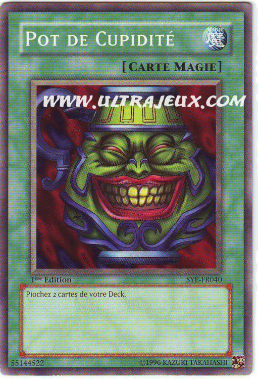 ”
. Which lets me draw two more cards from my Deck!
Sho then decided to take things up a notch.
Sho: Now I activate
“Super Vehicroid Fusion ”
! Now I can Fusion Summon using "Vehicroid" Monsters in my Deck, but I cannot Special Summon other "Vehicroid" Monsters for the rest of the turn!
Serena: A Fusion Summon using Monsters from his Deck?!
Serena said, taken by surprise once more.
Serena gasped at the sight now before her. A gigantic white and blue robot composed of different vehicles towered over her own Monster.
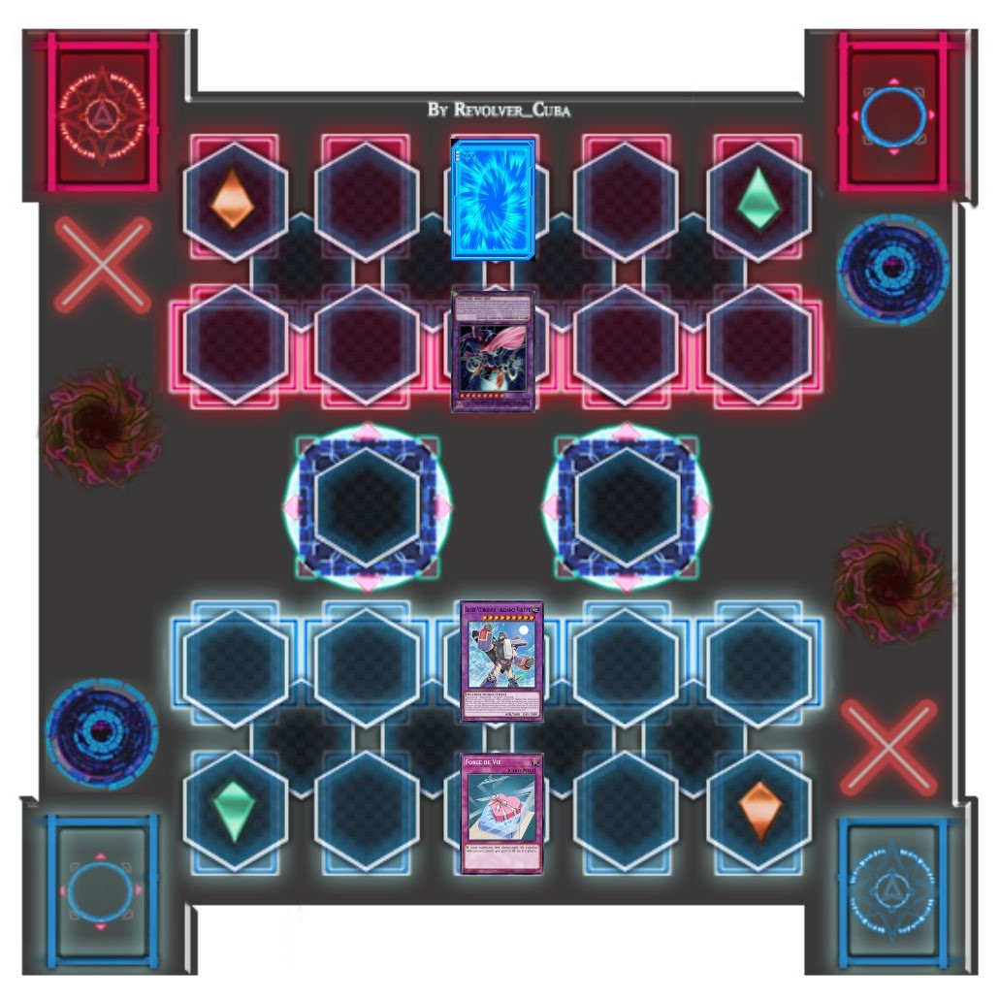
Sho: Now I activate
“Stealth Union ”
's Monster Effect! Once per turn, during my Main Phase, I can equip a non-Machine Monster to itself! Sorry Serena, but your
“Panther Dancer ”
is the only candidate!
“Stealth Union ”
began to reach for Serena's Monster.
Serena: I won't let you do that! I activate the Effect of
“Moonlight Crimson Fox ”
in my Graveyard!By banishing it, I can negate the Effect of a card targeting a "Moonlight" Monster!
She was sure her Monster would be safe, but to her astonishment, Sho's Monster didn't stop moving in to grab
“Panther Dancer ”
Sho: That won't work! A Monster Summoned by
“Super Vehicroid Fusion ”
can't be affected by card effects! It will still take your Monster!
Sho said this just as “Stealth Union ”
took hold of “Panther Dancer ”
and merged the two of them together. Now parts of
“Panther Dancer ”
could be seen on the giant machine's body.
Serena: Dammit! Serena yelled in frustration.
Sho: Now that
“Stealth Union ”
is equipped with a Monster, it can attack you twice each Battle Phase, just like your Monster! However, it's Attack Power will be halved until the end of the
Battle Phase!
Kenzan: Looks like Marufuji-senpai is about to deliver some payback-saurus.
Kenzan commented.
Asuka (Arc-V): This won't be pretty to watch.
Said the Asuka sitting with him.
Sho ended his turn while Serena was getting back up. She appeared to be frustrated.
Serena: Damn... that piece of junk took my Monster and used an Effect just like it's own against me! Sho Marufuji... I can't believe how good he is.
Despite her troubling position, Serena couldn't help but give a small smile.
Serena: I couldn't have asked for a more worthy opponent!
Sho: You okay Serena? Sho asked, showing concern to the girl opposite him.
Serena: I've been through worse! You may have the upper hand for now, but not for much longer! My turn!Draw!
Asuka (GX): I feel like Serena is about to make another turnaround. Said the Asuka next to Judai.
Judai: Same here. This Duel's been intense, but I think we're just about to see the climax!
Her boyfriend said, eagerly waiting to see what the younger girl will do now.
Serena: I play a Magic card called
“Moonlight Scratch ”
! By returning a "Moonlight" Fusion Monster on the Field to my Extra Deck, I can inflict damage to you equal to that Monster's Attack Points!
Serena revealed, shocking Sho.
Manjoume: Sho's
“Life Force ”
Trap only works against Battle Damage. It won't protect him from something like that.
Manjome pointed out. Sho realized this too as he took the heavy damage.
Sho: Ahhh !
(Sho: 3200 LP - 2800 LP = 400 LP)
Serena: Now you can't attack me twice anymore! And since I managed to damage your Life Points, I can draw another card from my Deck!
She liked what she drew next.
Serena: I play another Magic card,
“Moonlight Call ”
! I can Fusion Summon a "Moonlight" Fusion Monster by banishing the Fusion Materials from my Graveyard! Return to my side,
“Moonlight Panther Dancer ”
!
Serena got back the Monster she just returned to her Extra Deck.
Sho: Why did she bring back
“Panther Dancer ”
? She isn't strong enough to destroy
“Stealth Union ”
. What is she up to?
Sho asked himself in his mind.
Serena seemed to have read his thoughts as she made her next move.
Sho: Do you feel like dancing, Sho? Cause I do! Reverse card open.Continuous Trap card
“Moonlight Serenade Dance ”
! When I Summon a Fusion Monster to my Field, I can apply two Effects! First, I Special Summon a
“Moonlight Token ”
to your side of the Field!
Rei: Huh? Why would Serena give her opponent a Monster?
Asuka (Arc-V): It probably has to do with that card's other Effect.
Serena: Now comes my Trap's second surprise! For each Monster you have on the Field, my Fusion Monster gains 500 Attack Points! Since you have two Monsters now,
“Panther Dancer ”
is 1000 Attack Points stronger!
Sho: Oh crap! Sho said aloud, knowing he was in big trouble now.
Judai: Not good! If Serena attacks
“Stealth Union ”
now, with
“Panther Dancer ”
's ability to attack twice, Sho will lose!
Judai said, now feeling sorry for his best bud.
Asuka (GX): Not just that! Since his Life Points are now exactly at 400, Sho can't use
“Life Force ”
. again! She's cornered him!
Said his Asuka.
Asuka (Arc-V): What will he do now?
The other Asuka asked herself as her friend began her final attack.
Sho: You're right. It is over... for both of us! Trap card open...
“Kessen Yugo Final Fusion ”
! Judai gasped.
Judai: That Trap!
He thought to himself. It brought back a memory from the end of his first year. It was the Graduation Duel of Sho's older brother,
Ryo Marufuji.
At the time, Ryo was the only Duelist in the school that defeated him previously in a Duel. That rematch had been intense. In the end, that match ended in a Draw...
which happened because Judai himself used the same card as Sho did.
Sho:
“Final Fusion ”
can be activated when my Monster and my opponent's Monster battle each other! Both of us now take damage equal to the combined Attack Points of the battling Monsters!
Sho declared.
Serena: What!?But the combined damage is 7400! Which means...!
Serena said, realizing the truth.
Judai, Asuka (GX), Rei, Manjoume, Kenzan and Asuka (Arc-V): It's a DRAW!
Judai, his girlfriend, and all their old school friends said at the same time.
They, and everyone in else in the arena, watched in shock as the Monsters exploded, causing both Duelists to drop on one knee.
Sho: WAAAAAAAHHHHHHH!
Serena: AAAAAAAHHH!
(Sho: 400 LP - 7400 LP = 0 LP)
(Serena: 400 LP - 7400 LP = 0 LP)
A moment of silence passed, not a sound could be heard.
And then... Principle Samejima stood up and began clapping loudly. Yusho stood up and also began clapping. Judai, his Asuka, and eventually everyone was now standing
and applauding the two Duelists for their spectacular match. Judai even whistled.
As for Serena and Sho, they both walked toward each other and smiled.
Serena: That was the best Duel I've ever had. Thank you Sho.
Serena said gratefully. Sho nodded.
Sho: It was my pleasure Serena. I'm glad I got to duel you today. He replied as he and Serena shook hands.
As they did, something else clicked inside Serena. It was as if a veil had been removed and she could see something she couldn't see before. She then decided to ask
Sho a personal question.
Serena: Say Sho... What dorm were you in when you graduated?
She asked, reluctantly letting go of his hand.
Sho: Oh, I was in Obelisk Blue. So did my brother before me. Why do you ask? Serena shook her head, still smiling.
Serena: Nothing. Just curious.
She thought maybe it was the intensity of the Duel, but she no longer felt any animosity toward Obelisk Blue. After all, it was just a name of a dorm here. Clearly,
that name had a different meaning in this world than in her own. She would have to take the time to learn that meaning, and perhaps the meaning of the other dorm
names...
Serena and Sho looked around to see everyone applauding them. They both saw Judai and Asuka, smiling and cheering for the two of them. They then saw Manjome's group
doing the same, and that's when Sho noticed it. He blinked, rubbed his eyes, and looked back between where Judai was and where Manjome was. Unless his eyesight had
gone bad due to his contacts becoming faulty, he could see two Asukas! One cheering happily with Judai, and the other doing the same with Manjome, Kenzan, and Rei.
Sho: What the heck?! Why do I see Asuka at two different places at the same time?!
He'd have to tell Judai about this later, though he would probably be more shocked than he was. As he pondered over this puzzle, Principle Samejima raised his arms to
quiet everyone down. Gradually, the whole place went quite, finally allowing him to speak.
Samejima: I must say, that was one of the best Duels I've seen in this school... and the new year hasn't even started yet! Well done, both of you!
Both Sho and Serena smiled from the older man's praise. His next words were for Serena herself.
Samejima: Serena, based on your score on the written exam and your dueling performance, I'm happy to say you qualify to enter any of the three dorms in Duel
Academy! Any you choose! What will it be?
Serena looked from him to Yusho, to the Asuka she knew, to the other students wanting to qualify, and then to Judai. They all waited to hear her choice. She turned to
Sho, who stood silently and also waited. The girl smiled warmly at him before returning her gaze to Samejima. Her choice was made. Her answer surprised everyone who
knew her.
 led their students back to the main Academy building for their qualification exams. They could tell they were excited about being accepted and getting into those new
dorms. The two were also pleased that they started to put aside their misgivings about Obelisk Blue. Well, all but one, as they and
Rei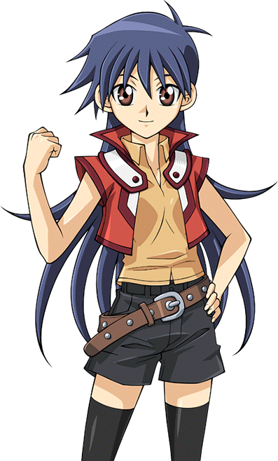 noticed when they glanced
at a certain indigo haired girl trailing in the back.
led their students back to the main Academy building for their qualification exams. They could tell they were excited about being accepted and getting into those new
dorms. The two were also pleased that they started to put aside their misgivings about Obelisk Blue. Well, all but one, as they and
Rei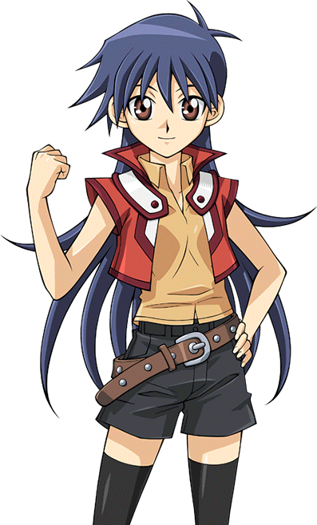 noticed when they glanced
at a certain indigo haired girl trailing in the back.